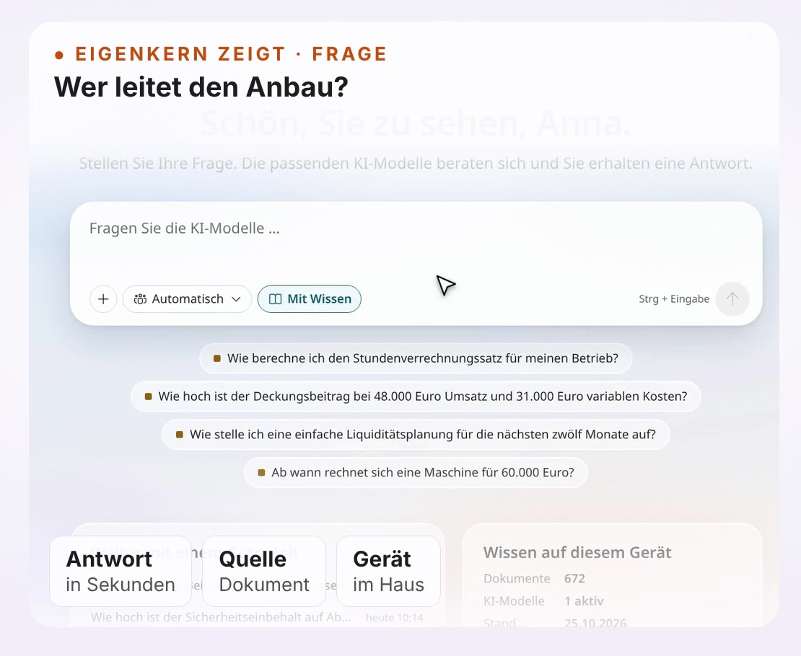

Ihre eigene KI. Im eigenen Haus.
Wir helfen jedem Betrieb, jeder Kanzlei, Praxis und Schule rund um KI, Automatisierung und Digitalisierung, von der Idee bis zum laufenden System. Unser Kern: die lokale KI, die Ihre Unterlagen liest, statt Ihre Daten zu verschicken. Auf Wunsch auch als Hybrid.
- Ihre Daten bleiben unter Ihrer Kontrolle: auf dem Gerät im Haus oder auf einem Server nur für Sie in Deutschland.
- Keine Kosten pro Frage und pro Kopf: das ganze Team arbeitet damit.
- Antworten aus Ihren Unterlagen, mit Fundstelle zum Nachprüfen.
So antwortet Ihre KI.
Fünf Situationen aus dem Film. Wählen Sie eine aus.

KI-Lösungen für Ihren Alltag, fertig eingerichtet.
Sie brauchen kein Vorwissen: Sie erhalten ein fertig konfiguriertes Werkzeug, wir schulen Ihr Team in Bedienung und Grenzen.
Lernsystem
Kurse und Lernvideos zu lokaler KI und Eigenkern, Schritt für Schritt.
Zum LernsystemFür SteuerkanzleienSteuerberater-KI
Mandantenfragen aus der Akte beantworten, Belegeingang und Fristen im Blick behalten, Schreiben entwerfen.
Mehr für KanzleienFür Ärzte und PraxenKI für Arztpraxen
Praxiswissen und Praxisplan für Dienste und Urlaub, mit Videos zum Ansehen.
Mehr für PraxenFür HandwerksbetriebeHandwerker-KI
Aufträge, Fotos, Angebote und Rechnungen an einem Ort. Unterlagen befragen wie einen Kollegen.
Mehr für das HandwerkFür Energie und LandwirtschaftWerkzeuge für Energieerzeuger
Fahrplanoptimierung, Flexrechner, Substratrechner, digitaler Zwilling und Wächter.
Mehr zu EnergieFür jede BrancheIhre Branche
Anwälte, Verwaltung, Industrie, Hausverwaltung: überall, wo Wissen in Ordnern liegt.
Alle BranchenWir begleiten Sie vom ersten Ordner bis zum laufenden System.
Sie bekommen kein Gerät, mit dem Sie allein gelassen werden, sondern ein fertig vorbereitetes System und eine Begleitung, die jeden Schritt erklärt.
Unterlagen ansehen
Wir prüfen vorab Ihre Ordner und Dokumente: Sind sie lesbar, wie groß sind sie, wie sind sie geordnet? Daraus legen wir gemeinsam die Zielstruktur fest.
Größtes Ärgernis zuerst
Was Sie im Alltag am meisten Zeit oder Nerven kostet, gehen wir zuerst an. Die Reihenfolge der weiteren Themen bestimmen Sie. Ältere Unterlagen folgen nach und nach.
Fertig ausliefern
Gerät und Software kommen vorinstalliert zu Ihnen. Ihre gewohnte Ordnerstruktur bleibt, die KI arbeitet im Hintergrund mit einer eigenen, synchronen Datenbank.
Einführen und schulen
Kurze Einführungsvideos gehören fest dazu. Sie erklären, was die KI kann und wo ihre Grenzen liegen. Ein Hilfe-Assistent beantwortet Fragen direkt im System.
Betreuen
Wir halten das System aktuell. Bei einem Defekt erhalten Sie innerhalb von 24 Stunden ein Austauschgerät über unseren Hardwarepartner Wortmann.
Erreichbar von jedem Endgerät: Rechner, Tablet oder Handy, über einen gesicherten Zugang.
Lokal, Hybrid oder eigener Server: Sie entscheiden.
Wir erklären alle drei Wege im Einführungsvideo, mit Vor- und Nachteilen, bevor Sie sich entscheiden.
01Lokal
- Alles läuft auf dem Gerät in Ihrem Haus.
- Ihre Unterlagen werden vor Ort gelesen und abgelegt.
- Bei sehr großen Datenbeständen kann ein Rechenzentrum in Deutschland den ersten Import übernehmen, mit Auftragsverarbeitungsvertrag.
02Eigener Server
- Ihre KI läuft auf einem Server nur für Sie, in einem Rechenzentrum in Deutschland.
- Es wird keine Technik vor Ort benötigt.
- Mit Auftragsverarbeitungsvertrag.
03Hybrid
- Das Gerät in Ihrem Haus bleibt der Kern.
- Ein Wächter erzeugt eine Schattenkopie: Namen und vertrauliche Angaben werden durch Platzhalter ersetzt.
- So nutzen Sie auch große Cloud-KIs wie ChatGPT oder Claude.
- Wächter und Schattenkopie werden zusätzlich gebucht.
Der Wächter: Nur der Schatten verlässt Ihr Haus.
Was bedeutet Hybrid? Ihre lokale KI bleibt der Kern. Zusätzlich erzeugt ein Wächter eine Schattenkopie Ihrer Unterlagen, in der Namen und vertrauliche Angaben durch Platzhalter ersetzt sind.
Originaldokument
Echte Namen und sensible DatenWächter
Erstellt eine SchattenkopieCloud-KI
Sieht nur PlatzhalterAntwort zurück
Echte Namen werden wiederhergestelltEin Schatten ist besser als nichts.
Die großen Cloud-KIs werden rasant besser: bequem, schnell und stark bei schwierigen Aufgaben. Ihre privaten und geschäftlichen Daten wollen Sie ihnen aber nicht anvertrauen. Auf den Komfort verzichten wollen Sie auch nicht.
Deshalb schickt der Wächter nur einen Schatten: eine Schattenkopie Ihres Dokuments, in der Namen und vertrauliche Angaben durch Platzhalter ersetzt sind. Die Cloud-KI arbeitet mit dieser Kopie, die Antwort kommt zu Ihnen zurück, und erst dann werden die Platzhalter wieder durch die echten Angaben ersetzt.
Wer nur auf lokale KI setzt, bleibt in einer Blase. Mit dem Wächter nutzen Sie die Stärke größerer Systeme, bis lokale KI aufgeschlossen hat.
- Das Original bleibt bei Ihnen.Ihre Unterlagen liegen auf dem Gerät in Ihrem Haus.
- Der Wächter legt den Schatten an.Namen und vertrauliche Angaben werden durch Platzhalter ersetzt.
- Die Cloud-KI arbeitet am Schatten.Nur der Inhalt der Schattenkopie geht an den gewählten Dienst.
- Die Antwort kommt zurück.Sie wird bei Ihnen mit den echten Angaben zusammengeführt.
Wächter und Schattenkopie werden separat gebucht. Ohne Hybridlösung läuft nichts mit Cloud-KI.
Einmal kaufen, bei Bedarf erweitern.
Einmalig
Sie kaufen Hardware und Software. Danach zahlen Sie nichts pro Frage und nichts pro Kopf.
Monatlich, wenn gewünscht
Optionale Pakete nach Bedarf, etwa Rechnungswesen, Mahnwesen, Kundenverwaltung (CRM) oder branchenspezifische Lösungen. Jedes Paket ist einzeln kündbar.
Zusätzlich buchbar
Der erste Import großer Datenbestände ins Rechenzentrum in Deutschland sowie das Hybridmodell aus Wächter und Schattenkopie.
Was das für Ihren Betrieb kostet, nennen wir Ihnen nach einer Voranalyse Ihrer Unterlagen.
Cloud-KI oder Ihre eigene KI?
| Cloud-KI (ChatGPT und Co.) | Ihre lokale KI mit eigenem Kern | |
|---|---|---|
| Wo liegen Ihre Daten? | Auf den Servern des Anbieters, oft im Ausland | Bei Ihnen im Haus oder auf einem Server nur für Sie in Deutschland |
| Lernt jemand aus Ihren Daten? | Je nach Vertrag und Einstellung möglich | Nein. Die KI lernt nur in Ihrem Betrieb, das Wissen bleibt auf Ihrem Gerät. |
| Was kostet jede Frage, jeder Nutzer? | Abo pro Person und/oder Kosten pro Anfrage | Keine Kosten pro Frage, alle Mitarbeitenden arbeiten ohne Aufpreis |
| Geht es ohne Internet? | Nein | Ja, das Gerät vor Ort antwortet auch offline |
| Wo wird die Antwort berechnet? | Auf den Servern des Anbieters, auch wenn Ihre eigenen Unterlagen einbezogen sind | Auf Ihrem Gerät, aus Ihren Unterlagen, mit Fundstelle |
So liest sich der Unterschied: erst die Frage, dann die Antwort einer Cloud-KI, dann die Antwort Ihrer lokalen KI.
Fragen und Antworten.
Noch Fragen?
Wir beantworten sie gern, persönlich und ohne Verpflichtung.
Gespräch vereinbarenFragen per WhatsAppMit eigenen Unterlagen testen